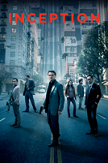
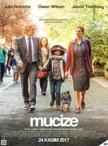
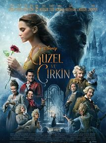

Inception / Başlangıç

Çok marifetli bir hırsız olan Dom Cobb’un (Leonardo DiCaprio) uzmanlık alanı zihnin
en savunmasız bulunduğu sırada yani rüya görme anında, bilinçaltının derinliklerinde
bulunan değerli sırları öğrenip onları satmaktır. Bu eşsiz maharet onu kurumsal casusluğun dünyasında
tehlikeli ve aranan biri yapmıştır. Aynı zamanda bu yetenek onu bir kaçak yapmış, sevdiği her şeyi elinden almıştır.
Cobb’a bu durumdan kurtulabilmesi için eşsiz bir fırsat sunulur. Eğer imkansız başlangıcı tamamlayabilirse ona hayatını
geri verebilecek bir fırsat önüne sunulur. Bu görevin amacı ise fikir çalmak değil tam aksine bir fikir yerleştirmektir.
FRAGMAN ▶
Tür: Aksiyon, Bilim Kurgu
Yapım: 2010 - İngiltere , ABD
IMDB Puanı: 8.8 /10
Yönetmen: Christopher Nolan
Oyuncular: Leonardo DiCaprio , Marion Cotillard , Joseph Gordon-Levitt , Ellen Page
Interstellar / Yıldızlararası
 Öncellike Yıldızlararası filmi Kip S. Thorne tarafından ortaya atılan Evrende Solunca Delikleri sayesinde zamanda
yolculuğun mümkün kılınabileceği teorisinden ilham alınarak yapılmıştır. Yıldızlararası (Interstellar) filminin hikayesi
bir kaşif ekibinin bu solucan deliklerinden birine gitmeye karar vermesi sonucunda başlıyor. Bilinmeyene karşı yapacakları
bu yolculukta birlikte kalabilmek için her biri büyük mücadeleler verecektir.
Dünyaca ünlü ve usta yönetmen Christopher Nolan’ın yazıp yönettiği Yıldızlararası filmi ayrıca dev yıldız oyuncu kadrosundan oluşuyor. 2014 yılının iddalı yapımlarından birisi olacağını düşündüğümüz Interstellar filmi izlenmeye değer kaliteli bir yapımdır.
Öncellike Yıldızlararası filmi Kip S. Thorne tarafından ortaya atılan Evrende Solunca Delikleri sayesinde zamanda
yolculuğun mümkün kılınabileceği teorisinden ilham alınarak yapılmıştır. Yıldızlararası (Interstellar) filminin hikayesi
bir kaşif ekibinin bu solucan deliklerinden birine gitmeye karar vermesi sonucunda başlıyor. Bilinmeyene karşı yapacakları
bu yolculukta birlikte kalabilmek için her biri büyük mücadeleler verecektir.
Dünyaca ünlü ve usta yönetmen Christopher Nolan’ın yazıp yönettiği Yıldızlararası filmi ayrıca dev yıldız oyuncu kadrosundan oluşuyor. 2014 yılının iddalı yapımlarından birisi olacağını düşündüğümüz Interstellar filmi izlenmeye değer kaliteli bir yapımdır.
FRAGMAN ▶
Tür:Bilim Kurgu, Gelecek, Gizem, Macera
Yapım:2014 - ABD
IMDB Puanı:8.8 /10
Yönetmen:Christopher Nolan
Oyuncular:Matthew McConaughey, Anne Hathaway, Jessica Chastain, Michael Caine, Casey Affleck
Wonder / Mucize

5. sınıfı bitiren Auggie Pullman içine kapanık bir çocuktur. Doğuştan beri bulunan yüzündeki
izler bir çok ameliyata rağmen geçmemiştir. Bu yüzden yıllardır hiç okula gitmemiş evde eğitimine
devam etmiştir. Yaralarından ötürü dışarıyla ilişkisi iyi olmayan çocuk artık dışarıda eğitim görmeye başlayacaktır.
Yeni başladığı okulda alay konusu olmasına rağmen diğer insanlara aslında dıl görünüşün ne kadar önemsiz olduğunu
kanıtlamaya çalışacaktır..
FRAGMAN ▶
Tür:2017, 2018, Dram, Manşet
Yapım:2017 - ABD
IMDB Puanı:8.0 /10
Yönetmen:Stephen Chbosky
Oyuncular:Julia Roberts, Owen Wilson, Jacob Tremblay, Mandy Patinkin, Daveed Diggs
Beauty And The Beast / Güzel Ve Çirkin

Yaşamış olduğu büyü saldırısında çirkin bir canavara dönüşen prens tek başına devasa şatosunda yaşamaya
devam etmektedir. Aslında kendisinden başka eşyaya dönüşen yardımcılarından başka kimsesi kalmamıştır.
Büyü kendisine aşık olan bir kadın çıkmadığı taktirde sonsuza kadar devam edecektir. Bir gün Maurice isminde
bir adam şatoya gizlice girmeye çalıştığından tutuklanır. Bunu duyan kızı Belle şatoya yardıma gider ve babasını
bırakıp kendisinin tutsak edilmesini ister. Burada yaşamaya başlayan kız prensle tanıştıktan son iyi anlaşmaya
başlarlar. Herşey normale dönmek üzereyken Belle’ye gönlünü kaptıran Gaston ise canavarı öldürmek için mücadele verecektir.
FRAGMAN ▶
Tür:2017, Fantastik, Manşet, Müzikal, Romantik
Yapım:2017 - ABD
IMDB Puanı:7.7 /10
Yönetmen:Bill Condon
Oyuncular:Emma Watson , Dan Stevens , Luke Evans , Ewan McGregor , Gugu Mbatha-Raw